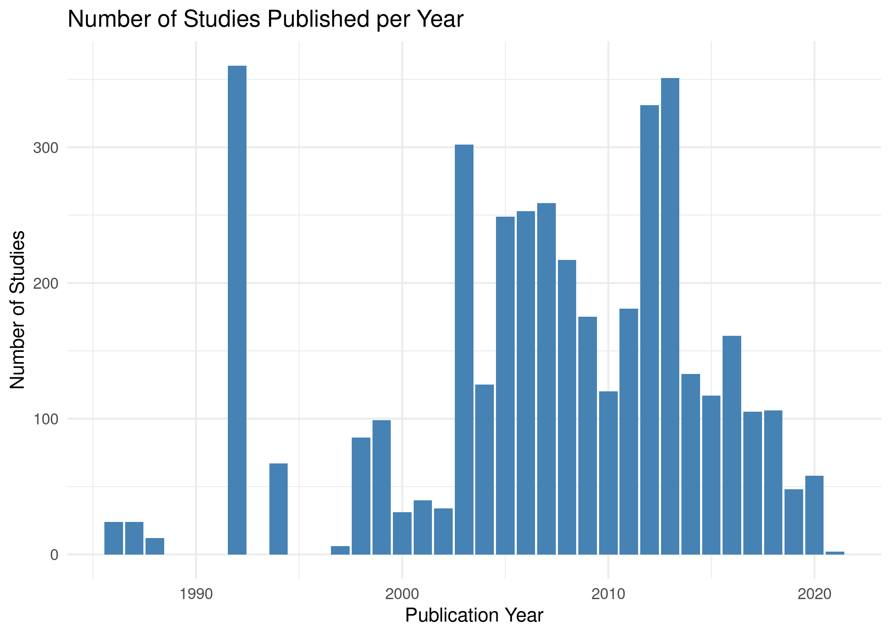
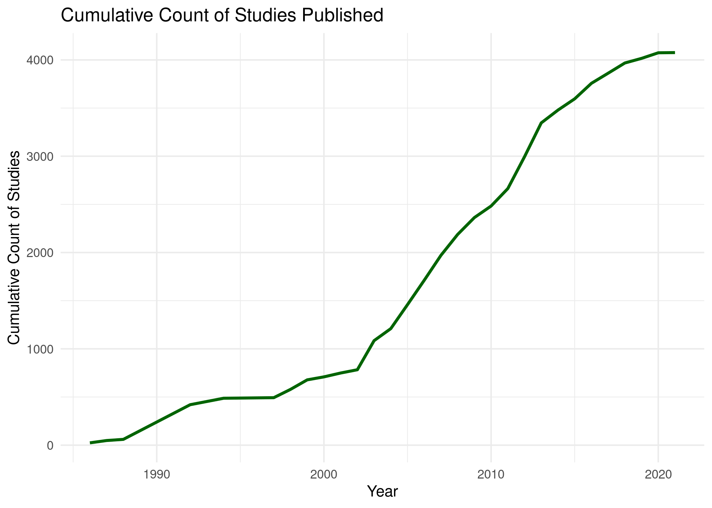
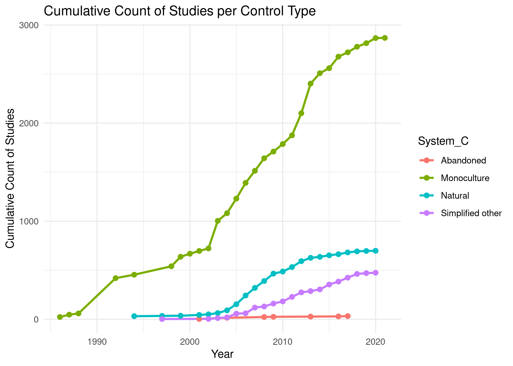

# Attach required libraries ----
library(ggplot2)
library(dplyr)Temporal analysis
Temporal analysis is a critical aspect of evidence maps and meta-analyses, allowing researchers to understand how knowledge and research trends evolve over time. This analysis can reveal patterns in the accumulation of evidence, shifts in research focus, and emerging areas of interest. By systematically examining temporal trends, researchers can identify gaps in the literature, inform future research directions, and contextualize findings within broader historical or socio-political frameworks.
However, it is essential to approach temporal analysis with caution. As the volume of published literature continues to grow, there is a risk of drawing hasty conclusions based solely on trends in publication counts. Researchers must critically evaluate the context behind the data, considering factors such as changes in research funding, emerging technologies, or shifts in societal concerns that may influence publication rates.
Recommendations
When visualizing temporal data, the choice of graph type is crucial for accurately conveying trends:
Cumulative Sum Graphs: These graphs represent the total number of publications over time, allowing researchers to visualize the overall growth of knowledge in a field. They can illustrate how research attention has increased, revealing long-term trends and shifts in focus.
Count Graphs: These graphs show the number of publications per time period (e.g., year), enabling the identification of specific periods of increased research activity. They can highlight trends that may warrant further investigation or indicate reactions to external events.
In some cases, a combination of both graph types can provide a comprehensive view of temporal trends, illustrating both cumulative growth and specific spikes in research output.
Practice
To illustrate temporal analysis in R, we will use the ggplot2 and dplyr packages to create both cumulative sum and count graphs. Below is an example of how to plot these two types of graphs using fictional publication data.
Preamble
Loading packages
Importing dataset
# Import datasets ----
metadata <- readxl::read_excel(path = here::here("data", "dataset-1-sources.xlsx"),
sheet = "Literature_screened")
outcome <- readxl::read_excel(path = here::here("data", "dataset-2-outcomes.xlsx"),
sheet = "Data")# Merge datasets ----
tab <- left_join(outcome, metadata)Count Graph
This graph visualizes the count of different studies published each year. It uses a bar graph to display the number of studies per publication year, making it easy to compare across years
# Summarize data by year ----
count_data <- tab %>%
group_by(Year) %>%
summarise(Count = n(), .groups = "drop")# Count graph ----
ggplot(count_data, aes(x = Year, y = Count)) +
geom_bar(stat = "identity", fill = "steelblue") +
labs(title = "Number of Studies Published per Year",
x = "Publication Year",
y = "Number of Studies") +
theme_minimal()
Cumulative Sum Graph
This graph displays the cumulative count of studies published over the years. It helps visualize how the total number of studies increases as time progresses.
# Calculate cumulative count ----
cumulative_data <- count_data %>%
arrange(Year) %>%
mutate(Cumulative = cumsum(Count))# Plot the cumulative sum graph ----
ggplot(cumulative_data, aes(x = Year, y = Cumulative)) +
geom_line(linewidth = 1, color = "darkgreen") +
labs(title = "Cumulative Count of Studies Published",
x = "Year",
y = "Cumulative Count of Studies") +
theme_minimal()
Grouped Graph by categories
This graph shows the cumulative count of studies based on different crop types. It allows for comparison of study trends across various crop systems.
# Grouped count by crop and year ----
grouped_data <- tab %>%
group_by(Year, System_C) %>%
summarise(Count = n(), .groups = "drop") %>%
arrange(Year) %>%
group_by(System_C) %>%
mutate(Cumulative = cumsum(Count)) %>%
ungroup()# Grouped cumulative count graph ----
ggplot(grouped_data,
aes(x = Year, y = Cumulative,
color = System_C, group = System_C)) +
geom_line(linewidth = 1) +
geom_point(size = 2) +
labs(title = "Cumulative Count of Studies per Control Type",
x = "Year",
y = "Cumulative Count of Studies") +
theme_minimal()
Brief note on cumulative meta-analyses
Cumulative meta-analyses are another important aspect of temporal analysis. They allow researchers to assess how the effect sizes of interventions or phenomena change as new studies are added over time. This approach can provide valuable insights into the robustness of findings and help track the evolution of evidence on specific topics. Cumulative meta-analyses can further enrich evidence maps by providing a more nuanced understanding of how knowledge accumulates and shifts within a research domain.
By integrating temporal analysis into evidence maps and meta-analyses, researchers can enhance the depth and relevance of their findings, ultimately contributing to a more robust and informed understanding of research trends and their implications.